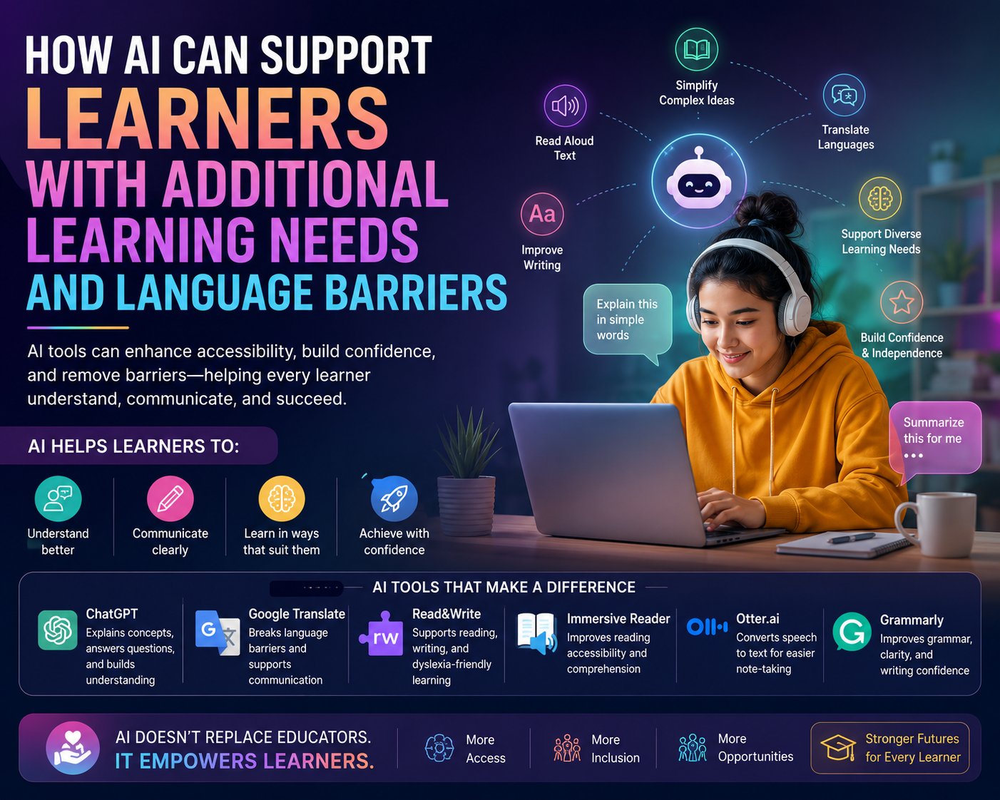

Artificial Intelligence can improve accessibility, strengthen learner confidence, reduce communication barriers, and support more inclusive educational environments when used ethically and responsibly.

Modern classrooms and training environments are increasingly diverse. Educators now work with learners from different cultural backgrounds, language groups, educational experiences, and learning abilities.
Some learners may have additional learning needs such as dyslexia, ADHD, literacy difficulties, processing challenges, or communication barriers, while others may struggle because English is not their first language.
Artificial Intelligence is increasingly helping educational providers create more accessible, supportive, and learner-centred environments.
Many ESOL learners and international students understand concepts well but struggle to express themselves confidently in written English.
AI-powered writing tools can help:
Translation tools such as Google Translate and DeepL can also help learners understand instructions, learning materials, and technical vocabulary more confidently.
AI can also provide valuable accessibility support for learners with dyslexia, reading difficulties, concentration challenges, processing difficulties, and other additional learning needs.
Traditionally, providing highly personalised support for every learner has been extremely time-consuming for educators.
AI tools can now help generate:
This type of reinforcement can improve learner independence and reduce barriers to understanding.
Human support remains essential for motivation, safeguarding, emotional understanding, encouragement, and professional educational judgement.
Educators, assessors, mentors, and learning support staff continue to play a critical role in:
AI lacks the empathy, emotional intelligence, safeguarding awareness, and contextual understanding required to replace human educational support fully.
While AI offers major opportunities, educational providers must also manage important risks carefully.
Learners increasingly require AI literacy so they understand:
When used ethically and responsibly, Artificial Intelligence has the potential to improve accessibility, reduce communication barriers, strengthen learner confidence, and support more inclusive education.
Ultimately, AI should be viewed as a support tool rather than a replacement for educators. The most effective learning environments will likely combine responsible AI use with strong human teaching, inclusive practice, and professional educational judgement.